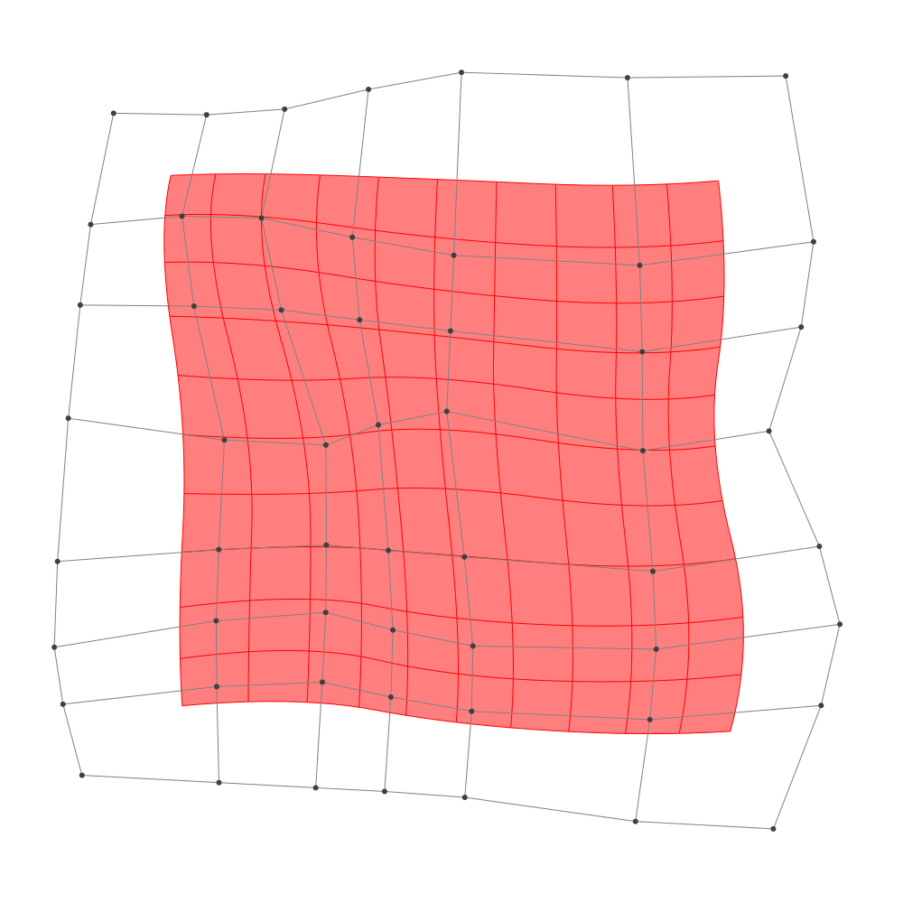
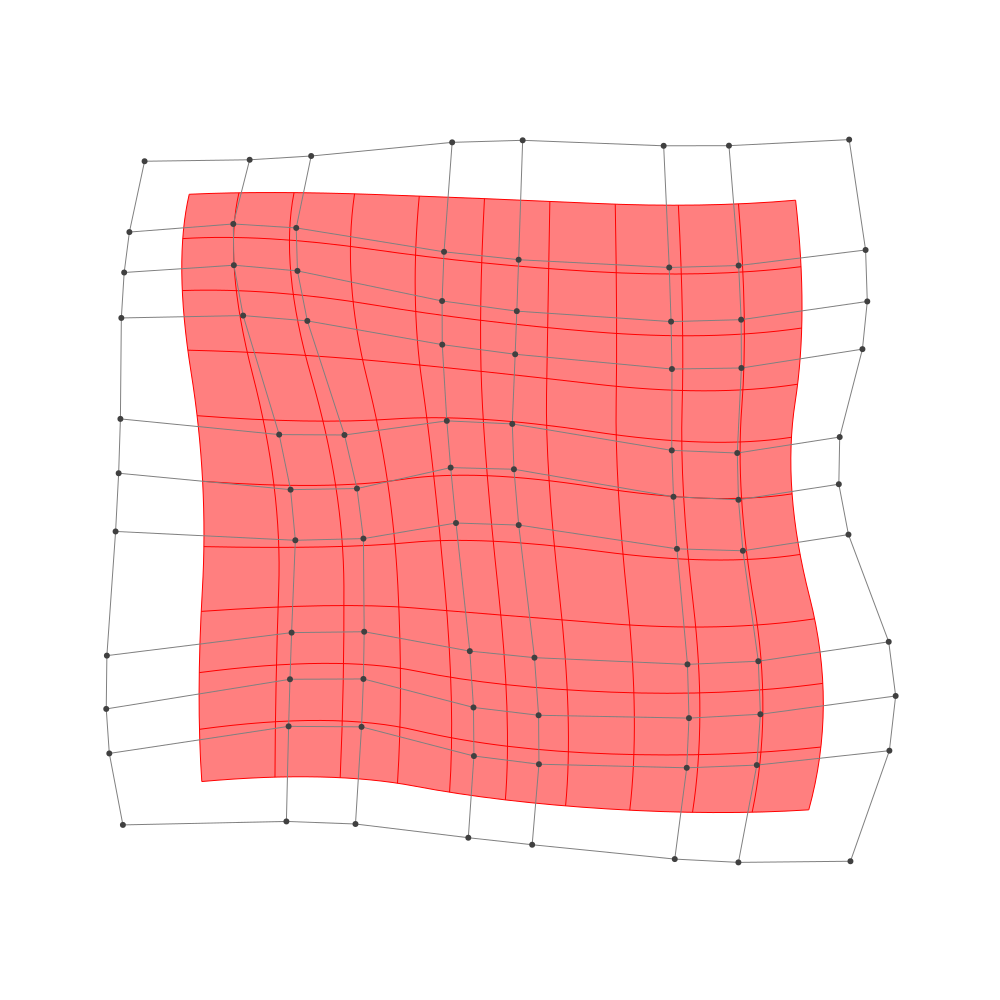

Refinement
BasicBSpline.refinement — FunctionRefinement of B-spline manifold with given B-spline spaces.
julia> p = 2 # degree of polynomial2julia> k = KnotVector(1:8) # knot vectorKnotVector([1, 2, 3, 4, 5, 6, 7, 8])julia> P = BSplineSpace{p}(k) # B-spline spaceBSplineSpace{2, Int64}(KnotVector([1, 2, 3, 4, 5, 6, 7, 8]))julia> rand_a = [SVector(rand(), rand()) for i in 1:dim(P), j in 1:dim(P)]5×5 Matrix{StaticArrays.SVector{2, Float64}}: [0.407842, 0.914384] [0.0572197, 0.225797] … [0.757576, 0.246289] [0.741849, 0.789402] [0.865301, 0.809271] [0.342408, 0.218471] [0.437706, 0.699327] [0.547548, 0.2559] [0.406184, 0.704872] [0.537686, 0.40339] [0.803202, 0.283063] [0.449301, 0.639504] [0.0642108, 0.320919] [0.945576, 0.598647] [0.201305, 0.659062]julia> a = [SVector(2*i-6.5, 2*j-6.5) for i in 1:dim(P), j in 1:dim(P)] + rand_a # random5×5 Matrix{StaticArrays.SVector{2, Float64}}: [-4.09216, -3.58562] [-4.44278, -2.2742] … [-3.74242, 3.74629] [-1.75815, -3.7106] [-1.6347, -1.69073] [-2.15759, 3.71847] [-0.062294, -3.80067] [0.0475484, -2.2441] [-0.0938164, 4.20487] [2.03769, -4.09661] [2.3032, -2.21694] [1.9493, 4.1395] [3.56421, -4.17908] [4.44558, -1.90135] [3.7013, 4.15906]julia> M = BSplineManifold(a,(P,P)) # Define B-spline manifoldBSplineManifold{2, (2, 2), StaticArrays.SVector{2, Float64}, Tuple{BSplineSpace{2, Int64}, BSplineSpace{2, Int64}}}((BSplineSpace{2, Int64}(KnotVector([1, 2, 3, 4, 5, 6, 7, 8])), BSplineSpace{2, Int64}(KnotVector([1, 2, 3, 4, 5, 6, 7, 8]))), StaticArrays.SVector{2, Float64}[[-4.092157876071459, -3.5856157041969734] [-4.442780272030024, -2.2742030815794587] … [-4.040334154312002, 2.2966693144019112] [-3.7424241747642513, 3.7462887824145223]; [-1.7581511465882587, -3.7105976011160666] [-1.6346988859378133, -1.690728708681766] … [-2.490403308691824, 2.4680016945289207] [-2.1575916761558074, 3.7184714558357412]; … ; [2.0376855664221383, -4.096609857485738] [2.303202223807733, -2.2169372645920236] … [2.1087021659281775, 1.6944514394826078] [1.9493008559331826, 4.1395044119641895]; [3.5642107834888126, -4.179080936517586] [4.445576128124685, -1.9013528971002551] … [4.064036627797411, 1.9990031549713885] [3.7013049824281854, 4.159061546776098]])
h-refinemnet
Insert additional knots to knot vector.
julia> k₊=(KnotVector(3.3,4.2),KnotVector(3.8,3.2,5.3)) # additional knotvectors(KnotVector([3.3, 4.2]), KnotVector([3.2, 3.8, 5.3]))julia> M_h = refinement(M,k₊=k₊) # refinement of B-spline manifoldBSplineManifold{2, (2, 2), StaticArrays.SVector{2, Float64}, Tuple{BSplineSpace{2, Float64}, BSplineSpace{2, Float64}}}((BSplineSpace{2, Float64}(KnotVector([1.0, 2.0, 3.0, 3.3, 4.0, 4.2, 5.0, 6.0, 7.0, 8.0])), BSplineSpace{2, Float64}(KnotVector([1.0, 2.0, 3.0, 3.2, 3.8, 4.0, 5.0, 5.3, 6.0, 7.0, 8.0]))), StaticArrays.SVector{2, Float64}[[-4.092157876071459, -3.5856157041969734] [-4.302531313646599, -2.7987681306264642] … [-3.9956476573798394, 2.514112234603803] [-3.7424241747642513, 3.7462887824145223]; [-2.5750535019073792, -3.666853937194384] [-2.600537823405004, -2.6037084183953283] … [-2.9847896965603677, 2.6060611852825444] [-2.7122830506687627, 3.728207520138315]; … ; [2.0376855664221383, -4.096609857485738] [2.196995560853495, -2.968806301749509] … [2.0847919694289283, 2.0612093853548448] [1.9493008559331826, 4.1395044119641895]; [3.5642107834888126, -4.179080936517586] [4.093029990270336, -2.8124441128671873] … [4.009626880992028, 2.3230119137420946] [3.7013049824281854, 4.159061546776098]])julia> save_png("2dim_h-refinement.png", M_h) # save image

Note that this shape and the last shape are identical.
p-refinemnet
Increase the polynomial degree of B-spline manifold.
julia> p₊=(1,2) # additional degrees(1, 2)julia> M_p = refinement(M,p₊=p₊) # refinement of B-spline manifoldBSplineManifold{2, (3, 4), StaticArrays.SVector{2, Float64}, Tuple{BSplineSpace{3, Int64}, BSplineSpace{4, Int64}}}((BSplineSpace{3, Int64}(KnotVector([1, 2, 3, 3, 4, 4, 5, 5, 6, 6, 7, 8])), BSplineSpace{4, Int64}(KnotVector([1, 2, 3, 3, 3, 4, 4, 4, 5, 5, 5, 6, 6, 6, 7, 8]))), StaticArrays.SVector{2, Float64}[[-3.771059242788528, -3.249073853453412] [-3.906864219383723, -2.5343295196599214] … [-3.7060806162805235, 2.6793316736468245] [-3.5542171554242925, 3.387545598760981]; [-2.1360423136982236, -3.2143190730966764] [-2.113822404757084, -2.263422649364257] … [-2.6669764437023606, 2.7603616426138657] [-2.5034790985167077, 3.4021923321594247]; … ; [2.384145962248412, -3.623851245495801] [2.568225014878731, -2.6508436618386413] … [2.386268818100375, 2.344598527656264] [2.289623968488358, 3.543375465507315]; [3.504470888167909, -3.6124893904297637] [3.8938328365483192, -2.5067966579313983] … [3.6559367367841586, 2.5001339078693054] [3.491515108714065, 3.6039126521613998]])julia> save_png("2dim_p-refinement.png", M_p) # save image

Note that this shape and the last shape are identical.